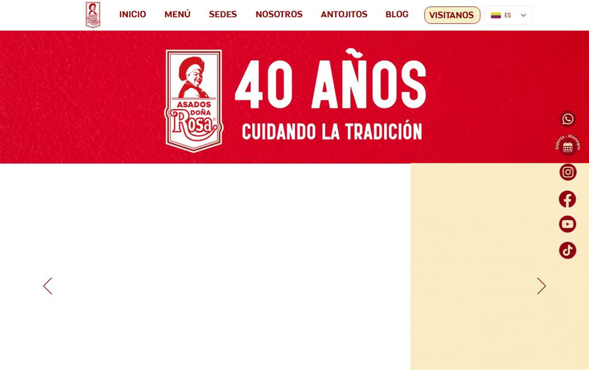
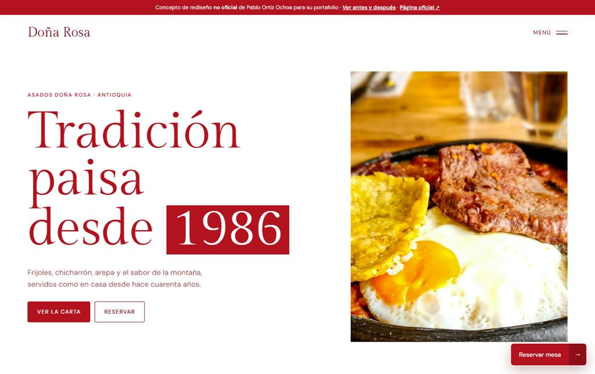

Antes y después


Qué encontré y qué cambió
Medido el 24 y 25 de noviembre de 2026 en la página de inicio, con el mismo método para las dos versiones.
| Aspecto | Antes | Después |
|---|---|---|
| Títulos principales (H1) — Google espera uno | 17 | 1 |
| Imágenes sin descripción para lectores de pantalla | 54 de 143 | 0 |
| Archivos que descarga la página | ≈ 250 | ≈ 15 |
| Contenido que se sale de la pantalla (scroll lateral) | Sí | No |
| Menú del restaurante en texto | No: la sección Menú muestra productos de la tienda | Sí, por categorías |
| Acción principal en la primera pantalla | Un botón «Visítanos» en el menú y seis íconos flotantes compitiendo | «Ver la carta» y «Reservar» junto al título, más un botón de reserva siempre visible |
| Sedes | Lista larga en una página aparte | Acordeón con filtro por región y «Cómo llegar» |
| Año en el pie de página | ©2023 | Actualizado |
Decisiones de diseño
Me basé en la estructura de sitios de alta cocina nominados en Awwwards: tipografía con serifa grande, fotos grandes y nítidas, texto que se desplaza y mucho espacio. Hace que la comida típica se vea tan valiosa como es.
Se mantienen el blanco y el rojo de Doña Rosa: fondo blanco, textos y detalles en rojo, y secciones completas en rojo para la carta, la franja de platos y el pie de página. Los textos hablan en tono paisa.
Texto que se desplaza con los platos típicos, fotos que se mueven suave al bajar y secciones que aparecen al llegar a ellas. Todo se desactiva si el usuario pide menos movimiento en su sistema.
Todo funciona en pantallas de 375 px: el menú abre a pantalla completa, los productos se deslizan de lado y las sedes se despliegan una por una.
Cómo lo hice
- Revisé la página actual en computador y celular, y medí títulos, imágenes, archivos y desbordes.
- Organicé la información real del negocio: historia, sedes con sus servicios y productos para llevar con sus precios.
- Estudié el diseño de referencia y lo adapté a la marca, con fotos libres de Unsplash.
- Construí el concepto en HTML, CSS y JavaScript, sin plantillas, trabajando con IA (Claude), y lo probé en celular y computador.